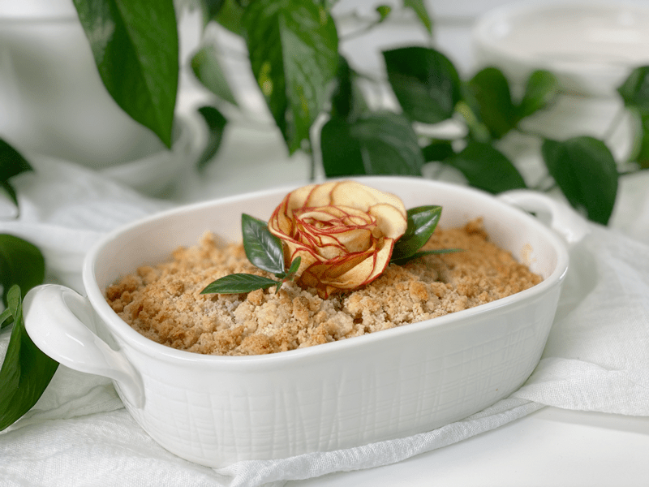
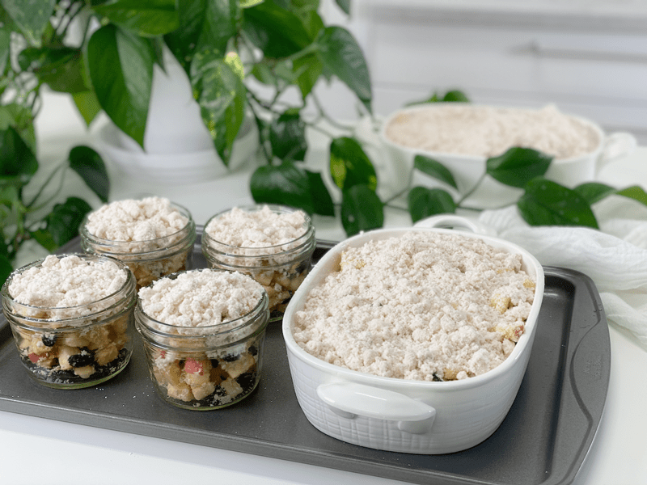
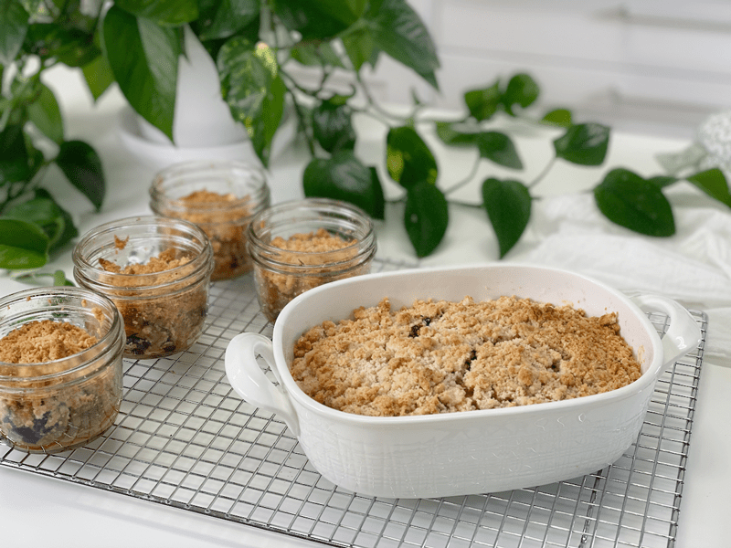
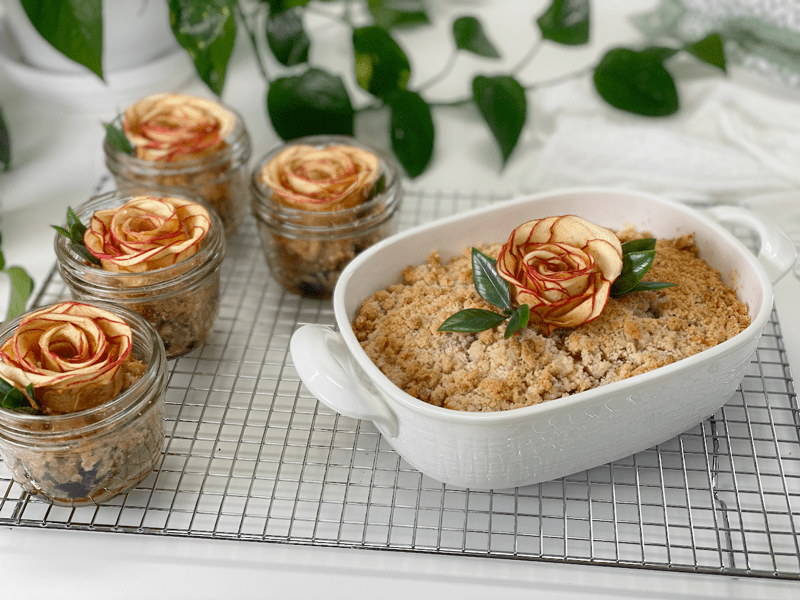
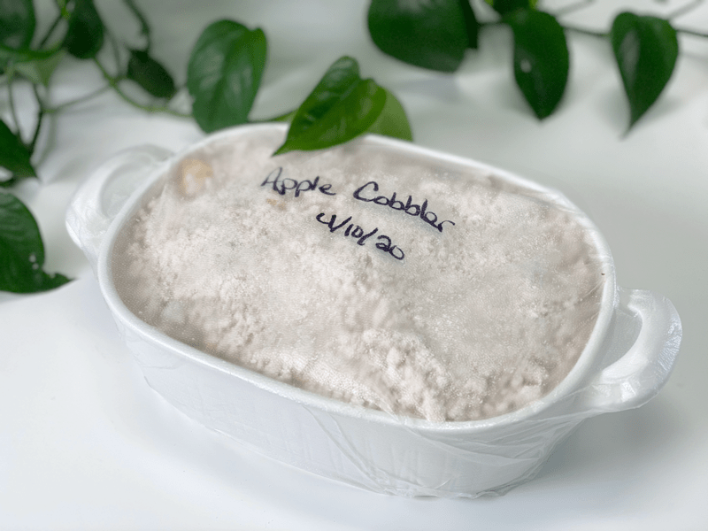

Apple Raisin Cobbler | Cooked
Indulge in warm apples spiced with cinnamon, ginger, and nutmeg. The great thing about this easy apple cobbler is you don’t have to wait for it to cool before serving it. Top the warm cobbler with a dollop of my raw vegan Creamy Vanilla Bean Frozen Custard ,or if you are in a hurry, make Banana Ice Cream with just ONE ingredient, and you will have absolute perfection!

This recipe entered our life while Bob was doing the AIP diet (autoimmune protocol), minus the chia seeds and nutmeg. Thankfully, he had to do it for only six months, but trust me, it was a long six months. With all the food restrictions, I knew I had to find a dessert (treat) to cheer him up. He is always such a good sport about things, but it was hard to see him making so many food sacrifices.
Once I made this for him, it became a staple in our house. I always had some in the fridge for those unplanned snack attacks–with a backup in the freezer. That’s one of the beauties of this dessert; it freezes perfectly. After pulling all the ingredients together, place them in a freezer/oven-safe dish, and slip into the freezer, where it can sit for up to three months. Once you are ready to bake it, let it thaw in the fridge, then bake as instructed below. I love to make food beautiful whenever I serve it to Bob, so I added one of my antique apple blossoms, which I like to keep in the freezer for moments like this.

The ingredients are pretty straightforward but for some of you, arrowroot might be a new idea. It is a tropical tuber native to Indonesia, similar to yam, cassava, sweet potato, and taro. It is usually processed into a powder, also called arrowroot flour. The powder is extracted from the plant’s rhizome, an underground stem with multiple roots that store its starch and energy.
Benefits of Arrowroot
- It is high in protein and contains healthy levels of the B-complex group of vitamins such as niacin, thiamin, pyridoxine, pantothenic acid, and riboflavin.
- Arrowroot powder comprises 32% resistant starch, which your body cannot digest. It forms a viscous gel when mixed with water and behaves like soluble fiber in your gut (1).
- Arrowroot may help treat diarrhea both by firming stool and helping you rehydrate.
- Arrowroot is useful in a gluten-free diet. When used as a flour, it helps improve the texture, crispness, and flavor of baked goods.
- It can be used as a thickener (comparable to corn starch) in gravies, stews, sauces, etc. It is best used at the end of cooking as it might break down in long, high-heat cooking. It has no taste in the food, and it leaves sauces glossy and silky.
- It is extracted without the use of high heat or harsh chemicals, unlike corn starch.
- In small quantities, it can be a total flour replacement, but I tend to mix it with other gluten-free flours.
There are no tricks or hidden techniques to this recipe. It’s straightforward, easy, and in the end, you enjoy it bite after bite. Please leave a comment below and be blessed, amie sue

Ingredients:
Crumble
- 1/2 cups coconut oil, cold
- 1 cup coconut flour
- 1 cup arrowroot
- 1 cup coconut sugar
- 1 tsp cinnamon
- 1/4 tsp pink Himalayan salt
- 1/2 cup cold water
Filling
- 6 apples, cored, chopped in 1″ squares
- 1 cup raisins
- 1/2 cup shredded coconut
- 1/4 cup coconut oil, melted
- 1 Tbsp white or black chia seeds
- 2 Tbsp lemon juice
- 1 tsp cinnamon
- 1/4 tsp ground ginger
- 1/4 tsp freshly grated nutmeg
Preparation:
- Preheat the oven to 350 degrees (F).
- In a large bowl, combine the coconut flour, arrowroot, coconut sugar, cinnamon, and salt. Make sure all the flavors get well mixed.
- Using a pastry cutter, cut in the cold coconut oil, till you have pea-sized lumps.
- If you don’t own a pastry cutter, you can use your hands.
- Sprinkle in the cold water. You want the crumble to stay chunky.
- In a large bowl, toss together the apples, raisins, coconut oil, dried coconut, chia seeds, lemon juice, cinnamon, ginger, and nutmeg.
- If following the AIP protocol, omit the chia seeds and nutmeg.
- Spread the mixture into a 9″x13″ pan, spread the apple mixture evenly in the pan.
- Like me, you can bake it in several different vessels…whatever meets your needs!
- Cover the with crumble topping.
- Bake for 40 minutes, until lightly brown on top.
- Store leftovers in the fridge for 5-7 days or freeze them in an airtight container for up to 3 months.
-

-
If you plan on using several small baking dishes, it is helpful to place them all on a baking pan for the ease of putting them in and taking them out.
-

-
Be prepared for your house to be filled with a comforting aroma!
-

-
I served these with my antique rose blossoms. Link up above.
-

-
I ended up with two baking dishes and four jars. I decided to hold back one baking dish so I could freeze and bake it later.
© AmieSue.com